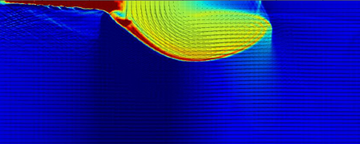

About Me
Article
Home
About Me
Article
Favorite Links
MHD simulation
CANS+
CANS
Athena++ JPN
Help For Coding
Super Time Stepping for Thermal Conduction
Sakaue san's Code test & Movies
Iijima san's pdf (MURaM/minmod/4RK/Orszag-Tang)
飯島さん MHDシミュレーションの多次元化・高次精度化
太陽関連
SDO
EM from AIA
NICT
BBSO